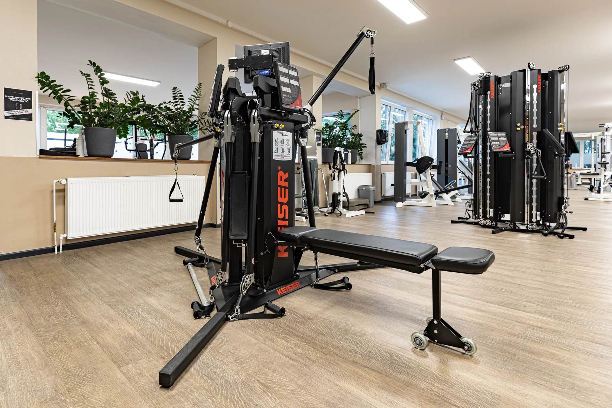
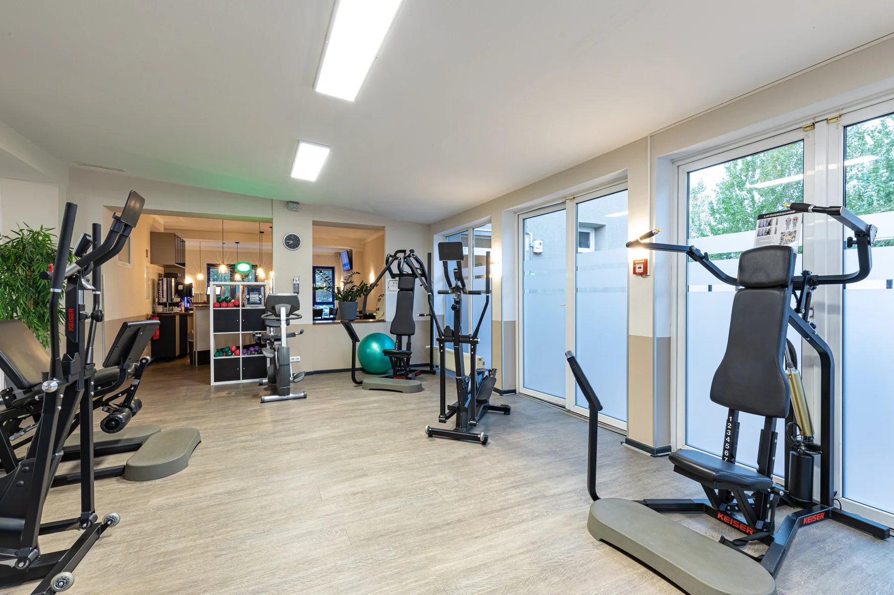
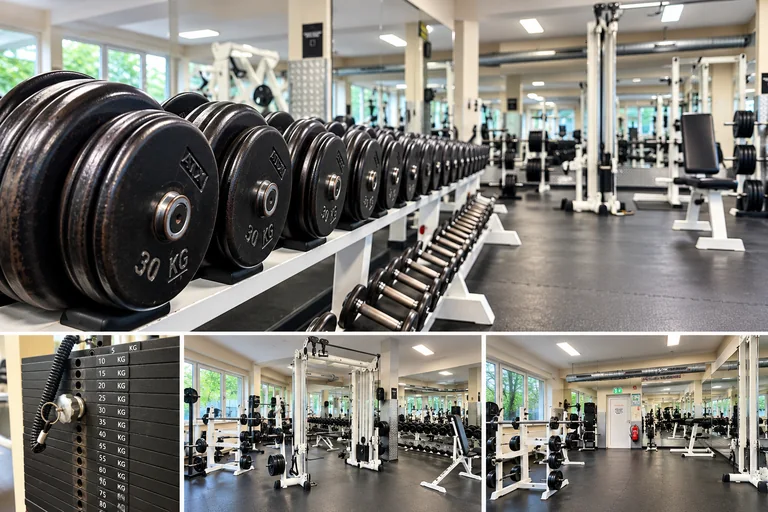

Kraft aufbauen
Geräte- und Krafttraining helfen dir, deine Muskulatur gezielt zu trainieren. Dein persönlicher Plan richtet sich nach deinem Trainingsstand und deinem Ziel.
Fitnesstraining in Kiel
Auf über 2.000 m²: Kraft, Ausdauer und Zirkeltraining. Unsere Trainer helfen dir, den Einstieg und deinen persönlichen Trainingsplan auf deine Ziele abzustimmen.

Was passt zu dir?
Du musst nicht allein entscheiden, wie du anfängst. Wir begleiten dich bei der Trainingsplanung.
Geräte- und Krafttraining helfen dir, deine Muskulatur gezielt zu trainieren. Dein persönlicher Plan richtet sich nach deinem Trainingsstand und deinem Ziel.
Unsere Ausdauergeräte lassen sich individuell einstellen. Pulssteuerung und einfache Bedienung unterstützen deinen Einstieg.
Zirkeltraining verbindet Kraftausdauer, Koordination, Kraft und Beweglichkeit. Zu Beginn erhältst du eine ausführliche Einweisung.
Einblicke ins Training
Ein paar Ansichten aus den Kraft-, Trainings- und Gerätebereichen im KIELS.




Training & Familie
Du möchtest regelmäßig trainieren und hast Kinder? Erfahre mehr über unsere Kinderbetreuung im KIELS.
Kinderbetreuung entdecken ↗
Persönlich statt beliebig
Unsere Personal Trainer helfen dir bei der Erstellung deines persönlichen Trainingsplans. Regelmäßige Checks und Anpassungen halten deine individuellen Ziele im Blick.
Körperanalyse & Trainingsplanung ↗Abwechslungsreich trainieren
Ein ausgewogenes Ganzkörpertraining mit einfach bedienbaren Geräten.
An den Zirkelgeräten wird auch die Gegenmuskulatur trainiert: erst ziehen, dann drücken. Die Geräte folgen dem natürlichen Bewegungsbogen; das Lifeband Resistance™-System ermöglicht gleichmäßigen Widerstand.
Leichte Handhabung, geringer Zeitaufwand und gleichmäßige Belastung der Gegenmuskulatur gehören zum Zirkelkonzept. Bei Beschwerden klären wir vorab, welches Training für dich geeignet ist – statt pauschale medizinische Versprechen zu geben.
Training persönlich besprechen ↗Für Unternehmen
Gesundheitsorientierter Fitnesssport für deine Mitarbeiter.
Bewegung, Gesundheit und Motivation im Arbeitsalltag: Wir besprechen mit dir die Situation deines Unternehmens und ein passendes Firmenfitness-Angebot. Eine unverbindliche Situationsanalyse und Beratung erhältst du beim KIELS-Team.
Firmenfitness kennenlernen und anfragen ↗Dein nächster Schritt
Sprich mit uns über dein Ziel und frage ein kostenloses Probetraining an.
Kostenloses Probetraining ↗